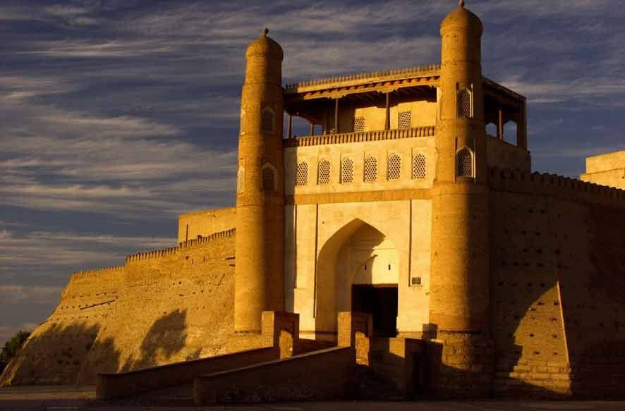
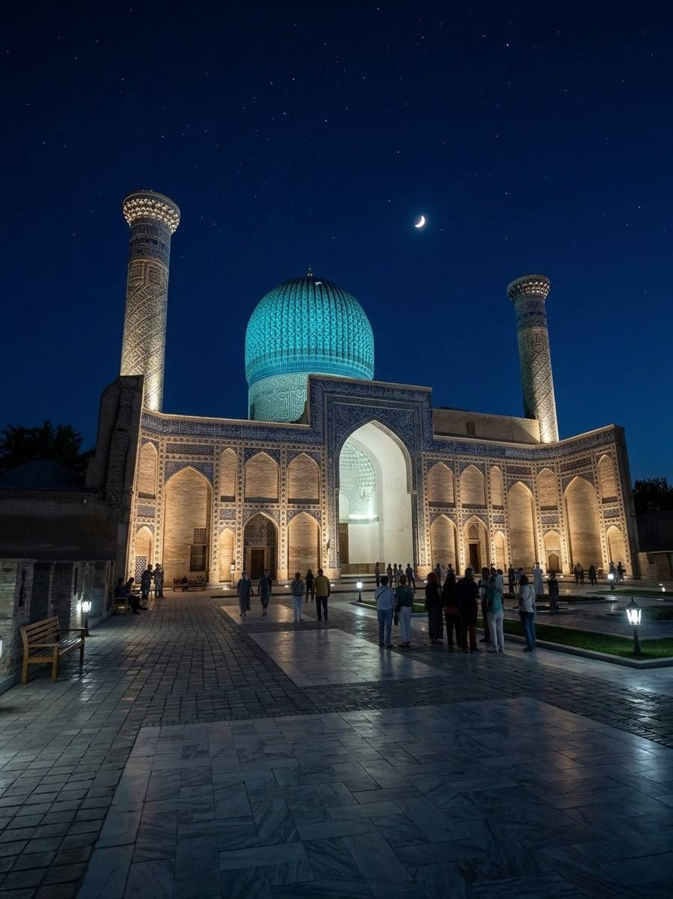
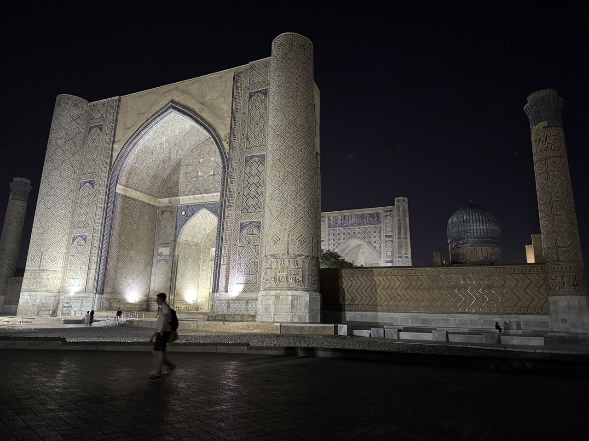
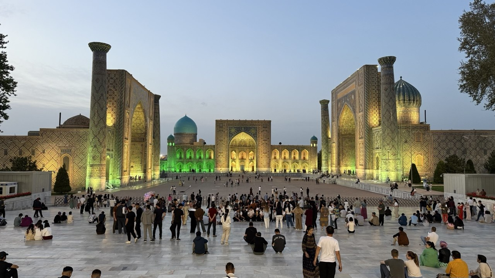
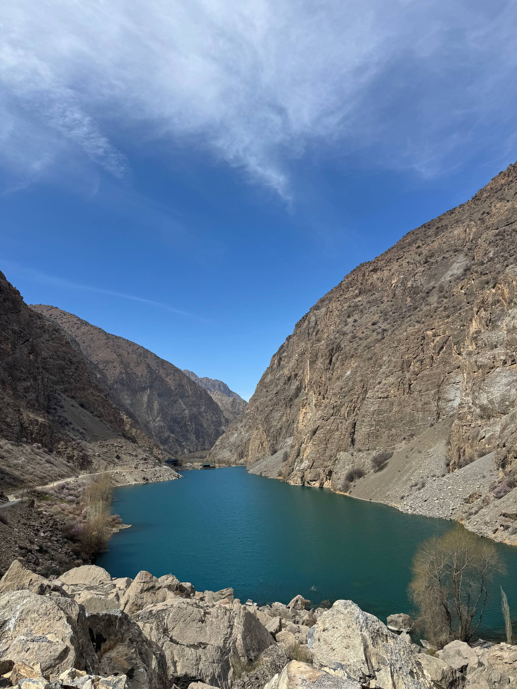

Evening Tour
$902 people
Evening Tour
$902 people
Evening Magic of Samarkand
An easy evening walk past the illuminated Gur-Emir Mausoleum, Registan Square and Bibi-Khanym Mosque, with a coffee break included.
★★★★★ 4.9
Private & Small-Group Tours Across Uzbekistan
Handcrafted journeys through Samarkand, Bukhara, Khiva and beyond — guided by local experts who know every hidden courtyard, bazaar and sunset viewpoint.
Our Story
My name is Damir, and I was born and raised in Samarkand.
I know Uzbekistan well, and I want to show it the way I see it myself — its ancient history, beautiful cities, delicious food, traditions and hospitable people.
That's how YourGuideUz came to be — a project made for travelers who want to see Uzbekistan beyond the popular landmarks, and feel its atmosphere from the inside.
We organize private tours and trips across Uzbekistan, helping you choose the route, transport and experiences that fit you.
I'd be glad to introduce you to Uzbekistan and show it from our side.
Why Travel With Us
Licensed, English & Russian speaking guides born along the Silk Road, sharing stories you won't find in guidebooks.
Comfortable groups of 2–12, or a fully private itinerary designed just for you and your travel style.
24/7 support, vetted drivers, and carefully chosen hotels — so you can relax and enjoy the journey.
From food-focused city breaks to full Silk Road expeditions — every trip is designed around you.
Featured Journeys
A taste of what awaits — see the full collection on the tours page.
Evening Tour
$902 people
An easy evening walk past the illuminated Gur-Emir Mausoleum, Registan Square and Bibi-Khanym Mosque, with a coffee break included.

Classic $903 peopleArk Fortress, Poi Kalyan complex, Bolo-Hauz Mosque, Magoki-Attori and Lyabi-Hauz — Bukhara's old city in a single day.
 Cross-Border
Ask for Price
Cross-Border
Ask for Price
Cross into Tajikistan's Fann Mountains to see the turquoise Marguzor Lakes cascading through a mountain valley.
Traveler Stories
Our guide knew every corner of Samarkand and every good place for plov. This was hands-down the best-organized trip we've ever taken.
From the yurt camp under the stars to the tilework in Khiva — every day surprised us. YourGuideUz handled every detail.
Booked a private tour for my parents — the guide was patient, warm, and treated them like family. Worth every cent.
Let's Plan Your Trip
Tell us your travel dates and interests — we'll reply within a day with a tailored itinerary and price.
A relaxed evening walk to see Samarkand's icons under floodlight, viewed from the outside, with a coffee break along the way.



Gur-Emir Mausoleum. The tomb of Amir Temur, viewed from the outside under evening floodlight.
Registan Square. Samarkand's grandest ensemble, at its most dramatic once the three madrasas are lit up for the night.
Bibi-Khanym Mosque. One of the largest mosques of its era, its floodlit facade closing out the walk.
Coffee break. A stop for coffee along the route, included in the tour price.
This is an outdoor walking tour — sites are viewed from the outside only; entry inside the monuments is not included.
Tour price: 2 people — $90, 6 people — $170, 10 people — $220. Larger groups on request.

A full-day cross-border excursion into the Fann Mountains, where seven turquoise lakes of different shades step down a single valley. A valid passport is all you need — we handle the border crossing.



07:00 — Start of the tour. We pick you up from your hotel in Samarkand and drive towards the border with Tajikistan.
~08:00–08:15 — Jartepa border crossing. We cross the border on foot; the procedure usually takes about 20–40 minutes. On the Tajik side, a driver with a comfortable vehicle meets you and the journey continues.
Stop in Panjakent. A short stop at the local bazaar to buy fresh fruit for a small picnic later at the last lake.
The Seven Lakes (Haftkul). We drive into the picturesque Fann Mountains, reaching each of the seven lakes by car — Mijgon, Soya, Hushyor, Nofin, Khurdak, Marguzor and Hazorchashma — with a short stop at every lake to walk around, enjoy the scenery and take photos.
Picnic at the seventh lake. At Hazorchashma, one of the most beautiful spots in the valley, we usually stop for a small picnic with the fruit bought earlier in Panjakent.
Return. We drive back to the border, cross it on foot again, where a car is waiting on the Uzbek side. Around 16:00–17:30 we return to Samarkand and transfer you back to your hotel. Tour timing is approximate and may vary.
Important. This tour crosses an international border, so please carry your passport with you.